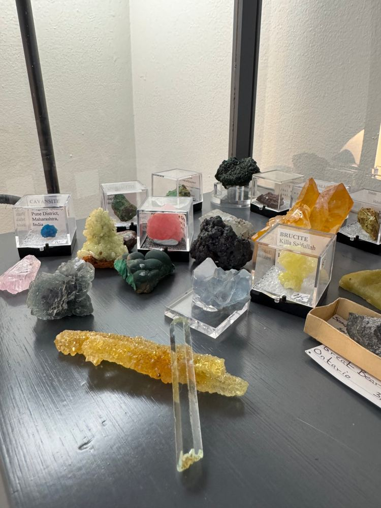
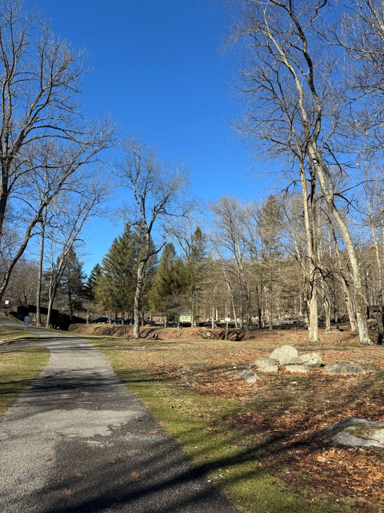
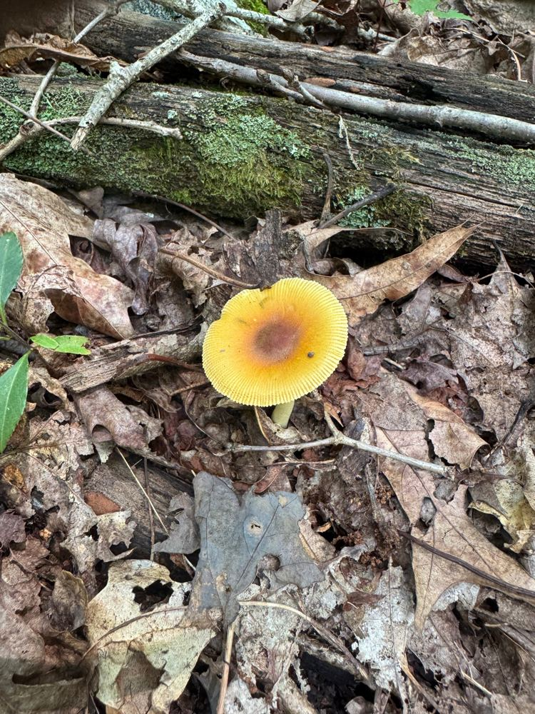
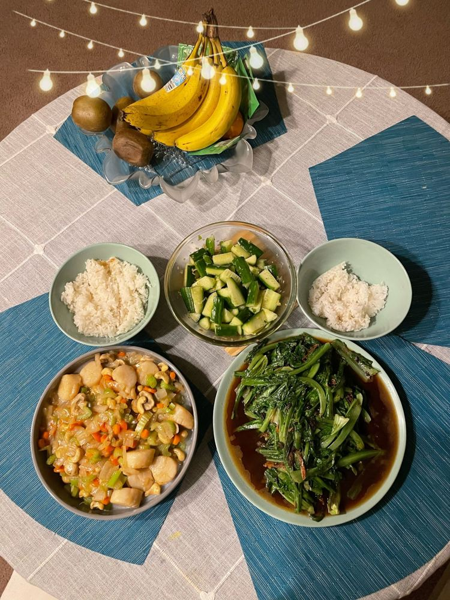
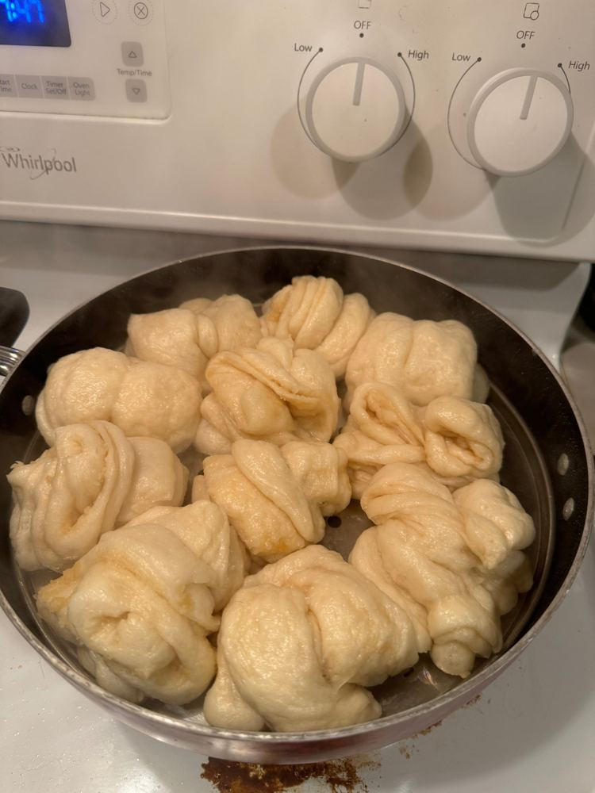
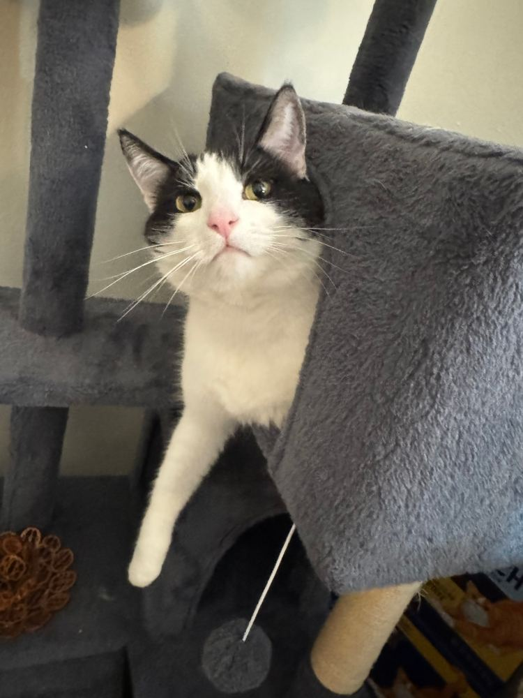
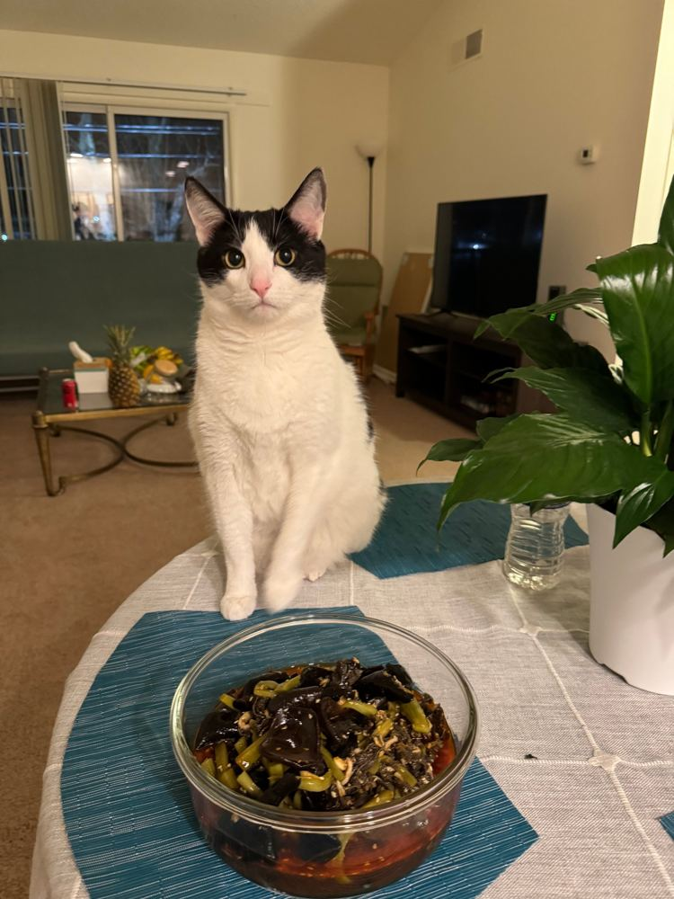
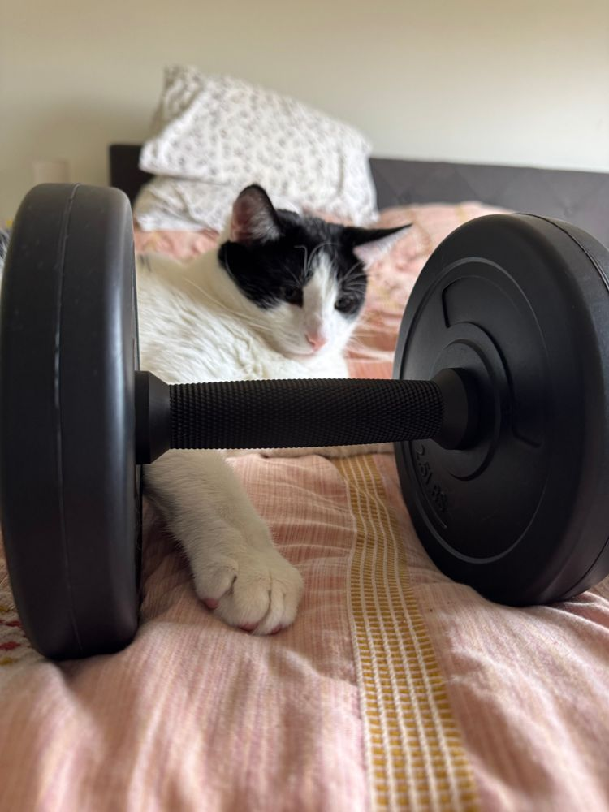
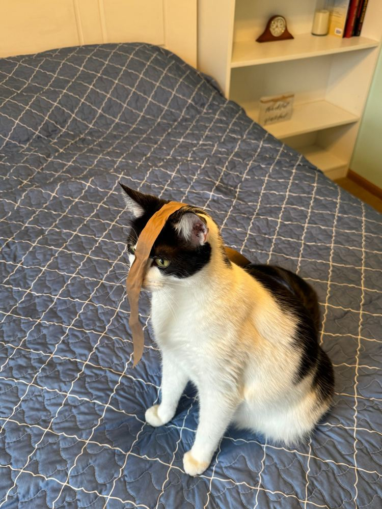
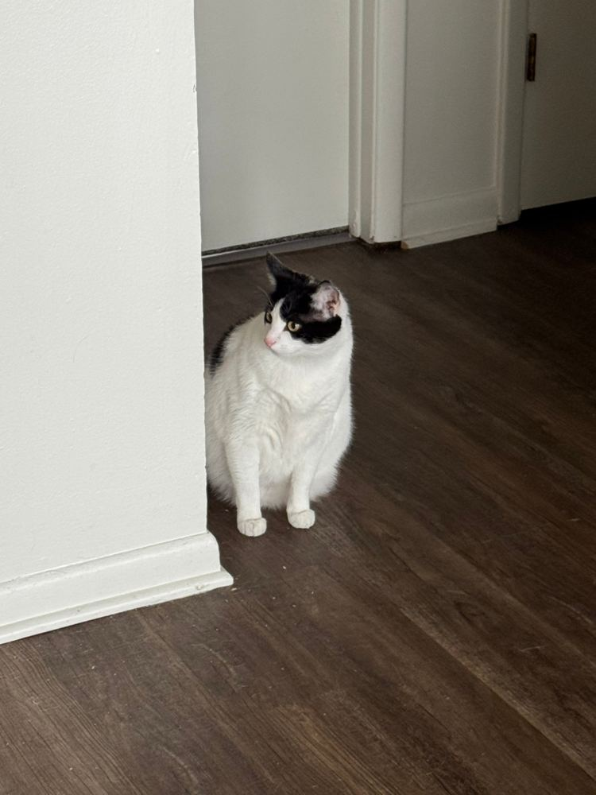

Zhujun Wang, Ph.D.Postdoctoral Research Associate, Washington State University, Pullman, Washington, USA Postdoctoral advisor: Prof. Ji Yun Lee
How do individual choices add up to collective resilience?
I work in operations research and decision analytics. I study how people, organizations, and AI systems make interdependent decisions under risk, and what tips a community or a supply chain from free-riding to coordinated action. My test beds are wildfire mitigation, evacuation, and the supply chains that rebuild afterwards.
Each dot is a household deciding whether to invest in wildfire mitigation. A household acts when the incentive plus the share of its acting neighbors beats its own threshold. Below about 45% nobody moves. Past that point, each new household pulls in its neighbors.
430Google Scholar citations (Oct 2026)
9h-index, i10-index 9
2U.S. DOT projects funded as Co-PI
$1.82Mrequested across 5 proposals
Job market paper · sole-authored
When Better AI Does Not Mean Better Collective Judgment: Algorithmic Authority in Wildfire Evacuation Decisions
Agencies coordinating an evacuation increasingly lean on AI forecasts. This paper asks when a more accurate algorithm makes the group decide worse, because people defer to its authority instead of pooling what they know. Presenting at the INFORMS 2026 Job Market Showcase: Sunday, November 1, 2:45–3:03 PM, Moscone South, Room 201, San Francisco.
News
Milestones, funding, and awards
Research
Decisions that hold up when things go wrong
I build optimization, game-theoretic, and behavioral models of how interdependent decision-makers act under risk, and use them to design incentives, coordination, and decision support that work in practice. My research has three topics.
Topic 1 · Supply chain management
Resilient supply chains and logistics
After a disaster, how do we get the right materials to the right place fast enough, when every link in the chain depends on the others?
What I do
I design optimization and coordination models for supply chains under disruption: timber and modular housing supply for post-wildfire reconstruction, critical materials for electric vehicles, climate risk in port-hinterland systems, and smart-contract platforms that keep construction supply chains moving during extreme weather.
Selected work
Annals of Operations Research (2024): AI-powered supplier selection for EV critical materials
Group Decision and Negotiation (2024): smart contracts against extreme-weather risk
Research in Transportation Economics (2026): port-hinterland climate risk
Co-PI, U.S. DOT (PacTrans) project on timber supply for post-wildfire rebuilding
Topic 2 · Community resilience
Community resilience to disasters and natural hazards
My cleared yard protects your house too. So why does everyone wait for the neighbors, and what gets a whole community to act?
Try it · How wildfire risk spreads between neighbors
Each house is one family on the same street. A green ring means the family has cleared brush and hardened the home. Press Start the fire and watch: a home without protection catches fire and then ignites the homes around it, and even protected homes can burn when too many neighbors are burning. Switch between the three buttons to see how much the whole street loses, or tap any house to change its choice.
0homes lost
Why it matters
Wildfire risk spills over. Embers and a burning house can ignite the homes next door, so a household that skips mitigation raises its neighbors' risk, and a household that invests protects more than itself. That makes mitigation a collective-action problem: everyone benefits when others act, so many wait.
What I study
I study the levers that move households from waiting to acting: government subsidies and incentives, insurance premium discounts, social norms among neighbors, and the risk information people receive. I also study the agencies on the other side. Fire services, local governments, and land managers must coordinate mitigation and evacuation decisions, now often with AI forecasts in the loop. My job market paper asks when a more accurate AI makes that multi-agency judgment worse.
Approach
Game-theoretic models capture how each household's choice depends on what its neighbors do, and let me design subsidies and insurance discounts that tip a community into acting at the lowest public cost.
Behavioral experiments measure how real residents respond to incentives, social norms, and risk information.
Completed A choice experiment with more than 1,200 participants
Ongoing A vignette experiment with more than 1,000 participants
Multi-agency modeling examines how fire services, local governments, and land managers weigh AI forecasts against their own information when they decide together.
Selected work
Expert Systems with Applications (2026): from free-riding to collective action in wildfire mitigation
Job market paper: algorithmic authority in multi-agency wildfire evacuation decisions
In preparation: When Do Communities Emerge under Shared Risk? Social Norms and Coordinated Trade-Off Restructuring (with J. Y. Lee and R. Rashidi)
In preparation: Collective Action in Wildfire Mitigation: The Role of Informational, Normative, and Institutional Embeddedness (with J. Y. Lee)
ICOSSAR '25: optimizing subsidies for community resilience; regional wildfire scenario reduction
Topic 3 · Human-AI decision making · Behavioral operations
Human-AI decision making in decentralized supply chains
If every firm in a supply chain decides with AI, does the network become more resilient? Not necessarily. AI changes what buyers order, what suppliers read into those orders, and how firms compete for the same scarce backup capacity, so better individual decisions can still add up to worse system outcomes.
What I do
I study this from the person to the network. Controlled experiments show how AI reliability, trust, and explanations (why the AI recommends something, and what it cannot see) shape real procurement decisions. Game-theoretic models capture how suppliers infer private information from AI-supported orders. Multi-agent experiments test when information sharing, negotiation, or limited delegation to AI agents turns individual gains into faster network recovery.
Selected work
NSF AI-SDM Workshop on Human-AI Complementarity, Carnegie Mellon University (2026)
Engineering Applications of Artificial Intelligence (under review): collective decisions under risk-aversion diffusion
Group decision foundations: Information Sciences (2023), Journal of Innovation & Knowledge (2023), IEEE Transactions on Fuzzy Systems (2022)
Methods toolkit
Optimization: multi-objective and robustGame theory and mechanism designBehavioral experiments: online, vignette, and choice experimentsAgent-based and multi-agent simulationGroup and multi-criteria decision-makingMachine learning and spatial analyticsSurvey design and statistical analysisPython · MATLAB
Publications
Publications
Selected peer-reviewed articles and manuscripts. * marks a corresponding author.
I teach students to justify their assumptions, read their own results, and explain why a model matters to the person who has to make the decision. I use short cycles of feedback so students take more ownership each round.
4.71/5
Guest lecture · Fall 2026 · Washington State University
CE 464 Integrated Civil Engineering Design I
Lecture on sustainability and socioeconomic impacts in civil engineering design, centered on stakeholder analysis and decision-making.
Overall effectiveness from 34 anonymous student evaluations. 97.1% rated the learning experience positively.
Courses I'm ready to teach
Undergraduate and graduate
01
Operations Management
Process design, capacity, inventory, quality, and service operations, with cases from manufacturing, services, and construction.
02
Supply Chain Management and Logistics
Sourcing, procurement, transportation, and risk, including construction supply chains and disaster recovery logistics.
03
Business Analytics for Decision Making
Descriptive, predictive, and prescriptive analytics with Python and spreadsheets, from data to a defensible recommendation.
04
Management Science: Optimization and Decision Analysis
Linear and integer programming, simulation, decision trees, and multi-criteria decisions under uncertainty.
05
Project Management, Scheduling, and Control
Planning, CPM scheduling, cost and schedule control, and stakeholder management for engineering and construction projects.
06
Engineering Economy and Cost Analysis
Time value of money, life-cycle cost, estimating, and investment decisions for infrastructure and capital projects.
Experience
2025 – present
Research Mentor
Washington State University, Pullman, Washington, USA
I mentor doctoral students in research design, problem formulation, analytical and computational modeling, data analysis, programming, academic writing, and presentations.
Staged, iterative feedback instead of one big review at the end
Students justify their assumptions and take ownership of research decisions over time
Fall 2026
Guest Lecturer, CE 464
Washington State University, Pullman, Washington, USA
Integrated Civil Engineering Design I, an undergraduate design course. Lecture on sustainability and socioeconomic impacts in civil engineering design.
4.71 / 5 overall effectiveness (34 evaluations)
97.1% positive learning experience
Spring 2021
Teaching Assistant, Human Factors Engineering
Xi'an Jiaotong University, Xi'an, China
Supported in-person and online delivery for 36 undergraduates: discussions, consultations, experiments, grading, and team research projects.
2016 – 2019
Founder and Instructor, Mathematical Modeling Association
Zhengzhou University, Zhengzhou, China
Co-founded and co-led a university-wide association of 500+ members. Taught English-medium workshops in optimization, MATLAB, and systems modeling.
Coached MCM/ICM teams to Meritorious Winner and Honorable Mention awards
Grants
Externally funded research
Co-PI on five external proposals at Washington State University with Prof. Ji Yun Lee and colleagues, covering transportation, housing, land management, and infrastructure asset management.
$129,999funded, 2 U.S. Department of Transportation projects
$1.82Mtotal requested as Co-PI
5proposals to U.S. DOT, HUD, BLM, and the Idaho Transportation Department
Background
Beyond research
Trained as an industrial engineer, I moved into management science and now work on decisions under risk. Outside work, here is what keeps me going.
Off the clock
Real photos, real life

Rock houndMy shelf of tiny boxes keeps growing. That blue puff is cavansite from Pune, India.

Trail daysBlue sky, bare trees, nowhere to be.

Trail rule #1Stop for every mushroom.Range dayEar muffs on, breathe out, squeeze. Oddly calming after a week of reviewer comments.

Home kitchenScallops with cashews, smashed cucumbers, garlicky greens.

Hand-folded 花卷Steamed buns, from scratch, slightly lopsided, fully delicious.
Boxing and liftingBoxing is my favorite workout: jab, cross, slip, repeat. Lifting days in between. No photos yet because I'm always mid-round.
Lab ID · All access

Chief Morale Officer
Department
Couch Operations
Specialties
Dinner inspection, ribbon modeling, supervising from high places
Reports to
Nobody, technically
Treats today: 0. Mood: judging.
Meet my research assistant
Every model I build gets reviewed by this cat first. Feedback is usually a slow blink.
Co-authors

Quality control

Spotter on duty

Reviewer 2

Checking the job market
Education
Ph.D., Management Science and Engineering, Xi'an Jiaotong University, Xi'an, China, 2021–2025Advisor: Prof. Qin Su. Dissertation: Research on Group Consensus Formation in Blockchain Adoption in Construction Projects. Outstanding Graduate.
Visiting Ph.D. Student, Project Management, University of Maryland, College Park, Maryland, USA, 2022–2025Advisor: Prof. Miroslaw J. Skibniewski. IPMA Graduate Research Award, 2024.
B.E., Industrial Engineering, Zhengzhou University, Zhengzhou, China, 2015–2019Outstanding Graduate at provincial and university levels.
Recognition
Graduate Research Award, Outstanding ContributionInternational Project Management Association (IPMA), 2024
Chen Jinxian and Zhu Chuzhu Economics and Management Award2022 and 2024
Innovative Leading Talents FellowshipXi'an Jiaotong University, 2022–2024, $22,800 per year
Outstanding GraduateXi'an Jiaotong University (Ph.D.); Zhengzhou University and Henan Province (B.E.)
Service
Editorial roles
Editorial Board Member, Civil and Energy ResearchContribute to manuscript review, provide editorial advice, and promote scholarly development.
Special Corresponding Expert, ENGINEERING Management2025–present. Organize open-access research seminars, coordinate peer review, engage experts in supply chain management and intelligent decision-making, and support the journal's international outreach.
Peer reviewer
International Journal of Project Management
ENGINEERING Management
Expert Systems with Applications
Engineering Applications of Artificial Intelligence
Artificial Intelligence and Applications
Information Technology and Management
IEEE Transactions on Intelligent Transportation Systems